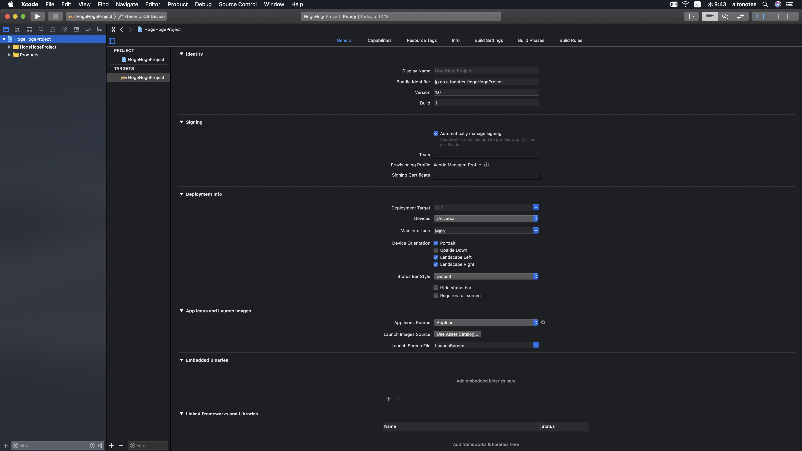
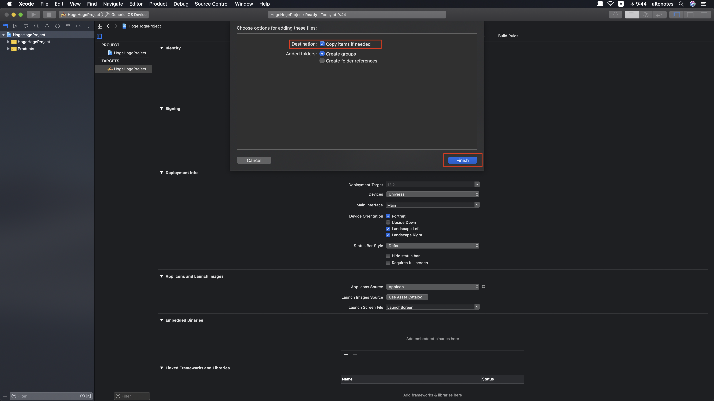
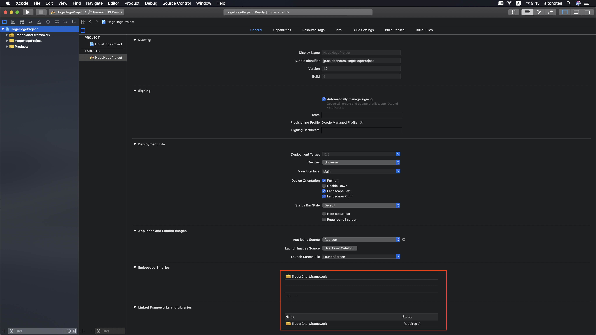
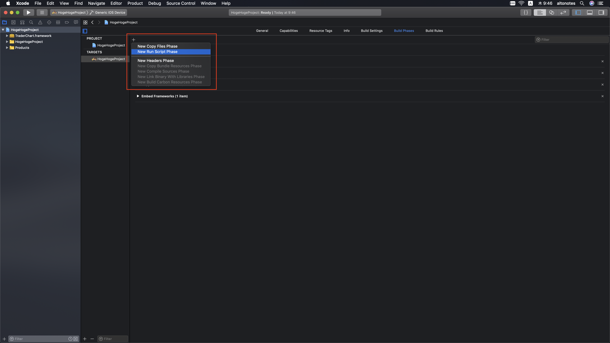
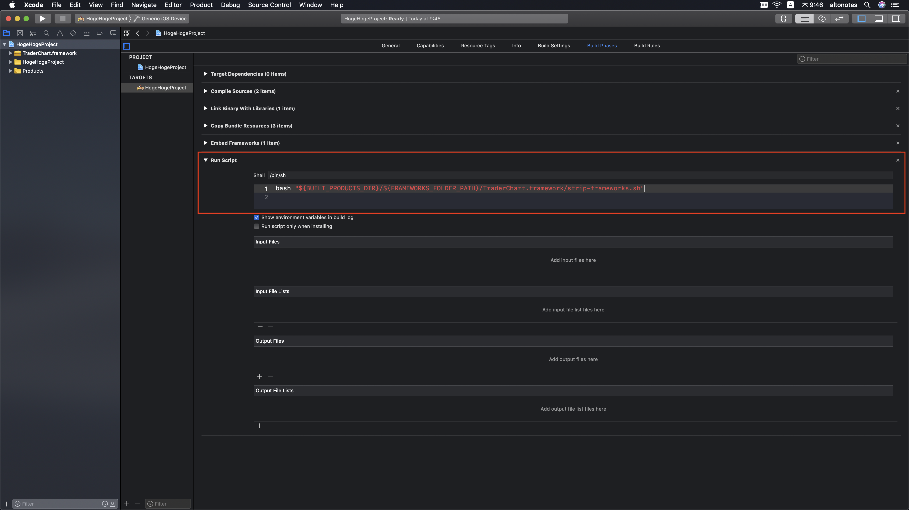
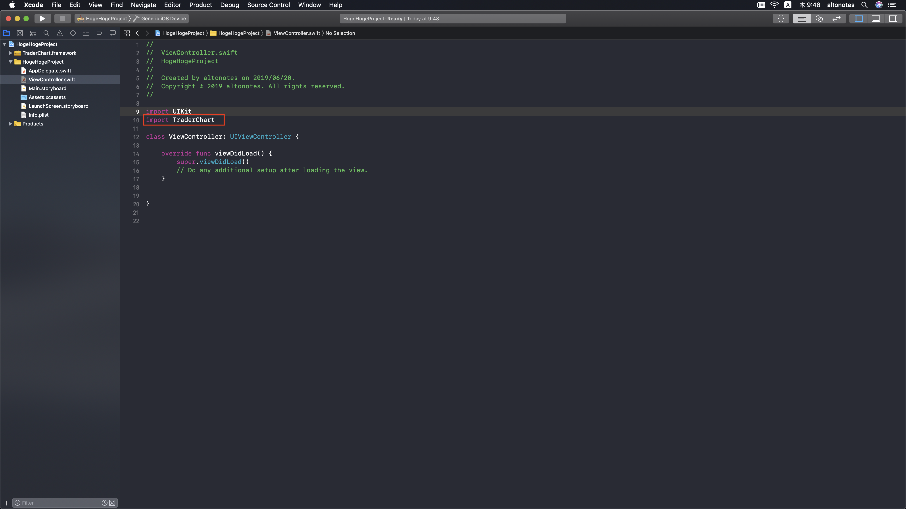

TraderChart Reference
TraderChart Reference
TraderChart
サポート環境
- iOS 10.0以上
導入手順
プロジェクトにフレームワークを追加する
- Xcodeプロジェクトをクリックしプロジェクト設定の General タブを表示してください。

- TraderChart.frameworkをEmbedded Binariesにドラッグ＆ドロップしてください。このとき、Copy items if needed にチェックが入っていることを確認してから Finish をクリックしてください。
複数Build Targetがある場合は、最初のBuild Targetにframeworkをドラッグ＆ドロップした後、残りのBuild TargetはEmbedded Binariesの+ボタンからframeworkを追加します。
 
- アプリケーションのターゲットの Build Phases タブで Run Script Phase を末尾に追加し、以下のスクリプトをコピー＆ペーストしてください。
bash "${BUILT_PRODUCTS_DIR}/${FRAMEWORKS_FOLDER_PATH}/TraderChart.framework/strip-frameworks.sh"
この手順は、ユニバーサルバイナリをアーカイブする時にAppStoreへの申請時のバグ を回避するために必要になります。
 
フレームワークをインポートする
TraderChartをコードから利用するためには、TraderChartを利用する各ソースファイルの先頭に import TraderChart を記述してください。

プログラミングガイド
ChartViewクラス
本ライブラリでチャートを表示する場合、ChartView または TraderChartViewどちらかのViewクラスを使います。
これらのViewクラスは xib や storyboard に配置しても、プログラムで動的に生成してもどちらでも使うことができます。
ChartView
チャート描画の基本的な枠組みを提供します。
ライブラリに組み込まれたチャート以外の独自のチャートを表示したい場合は、このクラスを使ってカスタマイズを行います。
TraderChartView
ChartView を継承し、チャート描画の基本的な枠組みに加え、金融商品のチャートでよく使われるテクニカル指標を提供します。
金融商品向けチャートでは多くの場合こちらのクラスを使うことになり、以下のプログラミングガイドは主にTraderChartView を使用する前提での説明になっています。
最小構成のローソク足表示サンプル
以下は IBOutlet に設定した TraderChartView にローソク足を表示するの最小構成のコードサンプルです。
import TraderChart
class MinimumSampleViewController: UIViewController {
@IBOutlet weak var chartView: TraderChartView!
override func viewDidLoad() {
super.viewDidLoad()
let data = ChartData(timeList: ["1", "2", "3"],
openList: [100, 103, 97],
highList: [110, 105, 100],
lowList: [ 95, 95, 87],
closeList:[105, 98, 92])
chartView.addData(data)
}
}
TraderChartView は初期状態でローソク足を表示するようになっており、そこに日時と四本値（始値、高値、安値、終値）の情報を持ったChartDataをセットするとローソク足が表示されます。
上記のサンプルでは固定値でChartDataを作成していますが、実際にはAPIなどから取得した四本値データから ChartData を構築する必要があります。
ChartData
チャートのデータは ChartData クラスのインスタンスとして ChartView に引き渡します。
ChartData は日時と四本値（始値、高値、安値、終値）に加えて、出来高、VWAP、シーケンスナンバーの情報を持つことができますが、このうち必須の情報は日時と終値の２つのみです。
ローソク足を描画する場合は四本値の情報が必要になりますが、Tickチャートなどのラインチャートを描画する場合は日時と終値の情報だけでチャートが表示可能です。
日時
ChartData クラスの timeList に設定した配列はチャートのX軸の目盛りテキストおよび、データをマージ（結合）する際の前後関係（順序）の判定に使われます。
timeList の要素には任意の文字列を設定可能ですが、後述するデータのマージ（結合）を行う場合は timeList の各要素を比較してデータの前後関係（順序）を判定するため、順番が分かる文字列である必要があります。
データのマージ
ChartData は最初に取得したデータに対して、差分データを保持する別インスタンスをマージ（統合）することができます。
以下は、1時、2時、3時の3レコードに対して、新しい3時、4時のデータをマージするコードの例です。
let data = ChartData(timeList: ["1", "2", "3"],
closeList:[100, 101, 102])
let additionalData = ChartData(timeList: ["3", "4"],
closeList:[103, 104])
data.merge(additionalData)
最初のデータ
| 1時 | 2時 | 3時 |
|---|---|---|
| 100 | 101 | 102 |
マージ後のデータ
| 1時 | 2時 | 3時 | 4時 |
|---|---|---|---|
| 100 | 101 | 103 | 104 |
マージ後は3時、4時の数値が additionalData の持つ103、104に更新されます。
マージの際の前後関係（順序）の判定
ChartData をマージする際、正しい位置にデータを追加するため各データの順序を判定する必要がありますが、順序の判定は標準ではtimeList の要素を比較して行われます。
標準では timeList の要素は64ビットの整数値(Int64)に変換して順序が比較されますが、timeList の要素が整数値に変換できないフォーマットの場合は、ChartData のイニシャライザで順序を比較するための関数を設定しておく必要があります。
以下のコードはtimeList の要素が ?時 の形式の文字列になっており、時の文字を取り除いた上での数値比較で順序を判定する例です。
func mergeData() {
let data = ChartData(timeList: ["1時", "2時", "3時"],
closeList:[100, 101, 102],
compareTime: compareTime) // 日時を比較するための関数 compareTime を渡す
let additionalData = ChartData(timeList: ["3時", "4時"],
closeList:[103, 104])
data.merge(additionalData)
}
// 文字列から "時" を取り除いた上で数値比較する
func compareTime(time1: String, time2: String) -> ComparisonResult {
let numberStr1 = time1.replacingOccurrences(of: "時", with: "")
let numberStr2 = time2.replacingOccurrences(of: "時", with: "")
let number1 = Int(numberStr1) ?? 0
let number2 = Int(numberStr2) ?? 0
if number1 < number2 {
return .orderedAscending
} else if number1 > number2 {
return .orderedDescending
} else {
return .orderedSame
}
}
sequenceNumber による順序の判定
Tickチャートなどの場合、同一日時に紐づく価格データが複数発生するケースがあります。
この場合timeListではデータの順序を判定できないため、timeListとは別にデータの順序を判定するための sequenceNumberList を ChartData に設定することができます。
sequenceNumberList を ChartData に設定した場合、timeList の代わりに sequenceNumberList によりデータの順序が判定されます。
グラフ領域
ChartView は複数のグラフ領域（GraphAreaインスタンス）を持つことができ、それらは縦に並べて表示されます。
全てのグラフ領域は ChartView.graphAreas プロパティで配列として取得でき、また先頭のグラフ領域は ChartView.mainGraphArea、２つ目以降のグラフ領域は ChartView.subGraphAreas プロパティでも取得することができます。
各グラフ領域は GraphArea.isVisible プロパティで表示・非表示を切り替えることができます。
表示するチャート（テクニカル指標など）の切り替え
TraderChartView に表示するチャートの種類は setVisibleMainChartTypes および setVisibleSubChartType function で設定します。
func setChartTypes() {
// 表示するメインチャートを指定します（複数指定可能）
chartView.setVisibleMainChartTypes([.candle, .turningPoint])
// 表示するサブチャートを指定します（複数指定可能）
chartView.setVisibleSubChartTypes([.macd, .stochastics])
}
表示するチャートの種類は MainChartItem および SubChartItem の enum 値で指定することができ、それぞれ以下の種類があります。
メインチャート（MainChartItem）
- candle ローソク足
- priceLine ラインチャート
- sma 単純移動平均
- ema 指数平滑移動平均
- ichimoku 一目均衡表
- bollingerBand ボリンジャーバンド
- turningPoint 転換点
サブチャート（SubChartItem）
- macd MACD
- stochastics ストキャスティクス
- rsi RSI
- rci RCI
- dmiAdx DMI/ADX
- volume 出来高
レイアウトのカスタマイズ
ChartViewの各要素のサイズやレイアウトは一般的で見やすい形に初期設定されていますが、個別にカスタマイズすることもできます。
以下はカスタマイズ可能なサイズやレイアウトをプログラムで初期設定する例です。
class ExampleViewController: UIViewController {
@IBOutlet weak var chartView: TraderChartView!
override func viewDidLoad() {
super.viewDidLoad()
// 上下左右の余白を設定します（初期値は全て0）
chartView.margin = UIEdgeInsets(top: 10, left: 15, bottom: 10, right: 15)
// グラフ領域の上下左右の枠線の太さを設定します（初期値は全て0.5）
chartView.border.setWidth(left: 15, right: 15, top: 15, bottom: 15)
// グラフ領域の区切り線の太さを設定します（初期値は全て0.5）
chartView.separator.lineWidth = 1
// 左端のスクロールの余白を設定します（初期値は50）
// 左端までスクロールした際グラフの左側にこのサイズ分余白が空きます
chartView.leftScrollMargin = 0
// 左側のスクロールの余白を設定します（初期値は50）
chartView.rightScrollMargin = 0
// 下部X軸（横軸）目盛りの領域の高さを指定します
chartView.xAxis.height = 50
// 下部X軸（横軸）の罫線の太さを設定します（初期値は 0.5）
chartView.xAxis.lineWidth = 1
// 下部X軸（横軸）の罫線の破線間隔を設定します。nilを指定した場合破線ではなく実線になります。
chartView.xAxis.lineDashIntervals = nil
// Y軸（縦軸）目盛りの左右位置を指定します（初期値は .right）
chartView.yAxisSetting.alignment = .left
// Y軸（縦軸）目盛りの幅を指定します
chartView.yAxisSetting.width = 80
// Y軸（縦軸）目盛りをグラフ領域と重ねるかを指定します（初期値は false）
chartView.yAxisSetting.graphOverwrap = true
// メイングラフ領域のY軸（縦軸）の罫線の表示・非表示を設定します（初期値はtrue）
chartView.mainGraphArea.yAxis.isLineVisible = true
// メイングラフ領域のY軸（縦軸）の罫線の太さを設定します（初期値は0.5）
chartView.mainGraphArea.yAxis.lineWidth = 1
// メイングラフ領域のY軸（縦軸）の罫線の破線間隔を設定します。nilを指定した場合破線ではなく実線になります。
chartView.mainGraphArea.yAxis.lineDashIntervals = nil
// メイングラフ領域のY軸（縦軸）目盛りテキストの罫線に対する位置（罫線の上・下・中心）を設定します。
chartView.mainGraphArea.yAxis.graduationAlignment = .aboveLine
// メイングラフ領域のY軸（縦軸）目盛りテキストのパディングを設定します。
chartView.mainGraphArea.yAxis.textPadding = 6
// ※Y軸の設定はメイングラフ領域だけでなく、各グラフ領域に個別に設定することができます
}
}
色の設定
JSONの設定ファイルでチャートの各種色を設定することができます。
func colorConfigSample(chartView: ChartView) {
chartView.colorConfig = ColorConfig(filePath: "color_config")
}
フォントの設定
X軸、Y軸目盛りや転換点などのフォントは個別に指定することができますが、フォントファミリーを一括で指定することもできます。 フォントファミリーを一括で指定する場合は、FontContextを実装したクラスを作り、ChartViewのfontContextに指定します。
func fontContextSample(chartView: ChartView) {
chartView.fontContext = SampleFontContext()
}
class SampleFontContext: FontContext {
func numericFont(size: CGFloat) -> UIFont {
return UIFont(name: "American Typewriter", size: size) ?? UIFont.systemFont(ofSize: size)
}
func descriptionFont(size: CGFloat) -> UIFont {
return UIFont.systemFont(ofSize: size)
}
}
X軸の設定
X軸は以下の設定をプログラムで行う必要があります。
- 目盛りテキストを表示する位置
- 罫線を描画する位置
- 目盛りテキストのフォーマット
これらはX軸の間隔や足種別（分足、日足、月足など）によって変わることが一般的なため、動的に設定する必要があります。
これらの設定はそれぞれXAxisの以下のプロパティで行うことができ、XAxis.setup functionでこれらのプロパティをまとめて設定することができます。
isVisibleText: 判定するレコードのインデックス、日時文字列（ChartData.timeListの要素）、全日時文字列の配列を引数にとり、該当のレコードにX軸目盛りテキストを表示するか判定します
isVisibleLine: 判定するレコードのインデックス、日時文字列（ChartData.timeListの要素）、全日時文字列の配列を引数にとり、該当のレコードにX軸罫線を表示するか判定します
formatter: ChartData.timeList の要素をX軸目盛りテキストとして表示する文字列に変換します
以下のコードサンプルでは isVisibleAxis の判定によりX軸の刻み10本ごとに罫線と目盛りテキストを描画します。
また、目盛りテキストは formatXAxisText により、yyyyMMddHHmm
のフォーマットから HH:mm
に変換して表示されます。このコードサンプルでは常に同じ変換を行いますが、一般的には現在のX軸の間隔や足種別により、変換方法を変える必要があります。
func setupXAxis() {
chartView.xAxis.setup(formatter: formatXAxisText, isVisibleText: isVisibleAxis, isVisibleLine: isVisibleAxis)
}
func isVisibleAxis(index: Int, timeText: String?, timeList: [String]) -> Bool {
return index % 10 == 0
}
func formatXAxisText(index: Int, timeText: String?) -> String {
guard let timeText = timeText, timeText.isNotEmpty else { return "" }
let inputFormat = DateFormatter()
inputFormat.dateFormat = "yyyyMMddHHmm"
guard let date = inputFormat.date(from: timeText) else {
return ""
}
let outputFormat = DateFormatter()
outputFormat.dateFormat = "HH:mm"
return outputFormat.string(from: date)
}
タッチマーカーの表示
初期状態ではX軸をタップするとタップした位置にマーカーが表示されます。
ChartView.onRecordSelected プロパティにコールバック関数を設定すると、X軸がタップされたタイミングで任意の処理を実行することができます。
コールバック関数にはタップされた位置のインデックスとチャートデータが引数で渡されます。
以下のコードサンプルはX軸タップ時にタップ位置のインデックスと終値をprint関数で出力します。
override func viewDidLoad() {
super.viewDidLoad()
chartView.onRecordSelected = { index, chartData in
if let index = index, let close = chartData?.closeList[index] {
print("\(index) C: \(close)")
}
}
}
Y軸の設定
Y軸は特別な設定をしなくても表示されますが、多くの場合は表示対象の商品に応じて、目盛り数値の小数点以下桁数を設定する必要があります。
以下はメイングラフ領域のY軸の数値の小数点以下桁数を3に設定する例です。
chartView.mainGraphArea.yAxis.designatedDecimalLength = 3
最大値・最小値の固定
初期状態では、Y軸の最大値と最小値は表示するチャートとスクロール位置によって動的に変わりますが、Y軸の最大値と最小値を固定することができます。
Y軸の最大値と最小値を固定するには YAxis.lockMinMax プロパティを true に設定するか、YAxis.setMinMax function を lock 引数に true を指定して呼び出します。（これによりlockMinMaxがtrueに設定されます）
以下のコードはメイングラフ領域のY軸の最小値と最大値を0と100に固定します。
chartView.mainGraphArea.yAxis.setMinMax(min: 0, max: 100, lock: true)
タッチマーカーの表示
初期状態ではY軸をタップするとタップした位置にマーカーが表示されます。
不要な場合は YAxis.isTouchEnabled プロパティに false を指定することで、この機能を無効にできます。
Y軸の目盛りのとりかた
最大値と最小値の更新
Y軸の最大値と最小値はGraphArea.chartsにセットされた TechnicalChart インスタンスにより更新されます。
TraderChartView の mainGraphArea にセットされたローソク足や単純移動平均などの組み込みテクニカル指標は、現在のスクロール位置で表示されるチャートが全て収まるように最大値と最小値を更新するため、スクロール位置を変更するとY軸の最大、最小も変化します。
カスタムの TechnicalChart を実装する場合は、updateYAxis ファンクション内で YAxis の最大値、最小値を任意に更新します。
// Y軸の範囲を0〜100に設定する例
public func updateYAxis(_ yAxis: YAxis, data: ChartData?, height: CGFloat, visibleSpan: ClosedRange<Int>) {
yAxis.setMinMax(min: 0, max: 100)
}
// Y軸の範囲を画面に表示される終値の最大、最小で設定する例
public func updateYAxis(_ yAxis: YAxis, data: ChartData?, height: CGFloat, visibleSpan: ClosedRange<Int>) {
yAxis.updateRangeAll(data?.closeList, span: visibleSpan)
}
最大値と最小値を固定する
YAxis.lockMinMax プロパティを true にするとTechnicalChart インスタンスによる最大値・最小値の更新を無効にして現在設定された最大値、最小値に固定することができます。
chartView.mainGraphArea.yAxis.lockMinMax = true
目盛り線のとり方
Y軸の目盛線と目盛りテキストが表示される位置は、Y軸の最大値と最小値の間隔により変わります。
YAxis.minLineNumber (初期値3)の本数の目盛線が最低入り、YAxis.scaleUnits × 10のn乗となる位置に目盛線と目盛テキストが描画されます。
スクロールしない固定プロット数のチャート表示
標準ではピンチイン・ピンチアウトによりX軸の刻みの間隔を拡大縮小することができますが、拡大縮小の機能を無効化し、チャート全体に表示するプロット数を固定することもできます。
チャート全体に表示するプロット数が常に変わらず、拡大縮小およびスクロールを行わない場合は、以下のようにXAxis.fixedCount に固定のプロット数を設定します。
override func viewDidLoad() {
super.viewDidLoad()
// チャート全体に10本のレコードが表示されるようX軸の刻み幅が決まる
chartView.xAxis.fixedCount = 10
}
凡例の表示
TraderChartViewに実装された各種テクニカル指標は、標準でグラフ領域の左上に凡例が表示されます。
凡例の内容はTechnicalChartプロトコルのlegendファンクションの返り値により決まりますが、移動平均など組み込みのテクニカル指標についてはlegendファンクションが実装済みのため、凡例をカスタマイズするためのcustomLegendプロパティがあります。
組み込みのテクニカル指標については、customLegendプロパティに凡例を作成するファンクションをセットすることで凡例の内容を任意に変更することができます。
以下はSMA（移動平均）の凡例をカスタマイズし、タップして選択した位置の移動平均の値を凡例に表示する例です。
override func viewDidLoad() {
super.viewDidLoad()
chartView.sma.customLegend = customSMALegend
}
private func customSMALegend(sma: SMA, selectedIndex: Int?) -> Legend? {
let index = selectedIndex ?? (sma.shortSMA?.count ?? 0) - 1
let short: String = sma.shortSMA?[index]?.stringValue(decimalLength: 0) ?? ""
let middle: String = sma.middleSMA?[index]?.stringValue(decimalLength: 0) ?? ""
let long: String = sma.longSMA?[index]?.stringValue(decimalLength: 0) ?? ""
return Legend([
ColorText("移動平均:\(short)", sma.shortColor, visible: sma.param.shortOn),
ColorText("移動平均:\(middle)", sma.middleColor, visible: sma.param.middleOn),
ColorText("移動平均:\(long)", sma.longColor, visible: sma.param.longOn),
])
}
UIScrollViewにChartViewを配置する
UIScrollViewにChartViewを配置した場合、UIScrollViewのスクロールが優先されるためChartViewのタッチ操作は正常に動作しなくなります。
この問題を回避するには、ChartView.setParentScrollView functionを実行します。
// Y座標が300以上の場合scrollViewのスクロールを有効にし、それ以外はChartViewのタッチ操作を有効にする例
chartView.setParentScrollView(scrollView, canScrollParent: { touchPoint in
return 300 <= touchPoint.y
})
このfunctionを実行すると、引数で渡したUIScrollViewの delaysContentTouches は false に設定され、ChartView以外のボタンなどのUIのタッチにも影響があることに注意してください。
カスタムTechnicalChartの実装
TechnicalChartプロトコルを実装したクラスを作成すれば、任意の指標を追加することができます。また、TechnicalChartプロトコルに必要なファンクションの空実装を持ったSimpleTechnicalChart クラスを継承したクラスを作成しても任意の指標を作成することができます。
TechnicalChartプロトコルには以下のファンクションを実装する必要があります。
var isVisible
表示/非表示を切り替えます。単純なBoolのプロパティの実装で問題ありません。
func legend(selectedIndex: Int?) -> Legend?
凡例（Legend）を表示する場合は任意の凡例（Legend）オブジェクトを返します。
func updateData(_ data: ChartData?, updatedFrom: Int?)
チャートデータが更新された場合に呼ばれます。
テクニカル指標が計算結果を保持する場合は、このファンクション内で指標を計算します。
func updateYAxis(_ yAxis: YAxis, data: ChartData?, height: CGFloat, visibleSpan: ClosedRange)
Y軸の範囲（最大・最小）を更新します。Y軸の範囲は大きく分けてスクロール位置によって変わる場合と変わらない場合があり、それぞれのコードサンプルを以下に記載します。
スクロール位置によらずY軸を0〜100に固定する場合
public func updateYAxis(_ yAxis: YAxis, data: ChartData?, height: CGFloat, visibleSpan: ClosedRange<Int>) {
yAxis.setMinMax(min: 0, max: 100)
}
現在のスクロール位置で表示される終値が全ておさまる範囲にする場合
open override func updateYAxis(_ yAxis: YAxis, data: ChartData?, height: CGFloat, visibleSpan: ClosedRange<Int>) {
yAxis.updateRangeAll(data?.closeList, span: visibleSpan)
}
func updateXAxis(_ xAxis: XAxis, data: ChartData?)
X軸の範囲を更新します。実装するテクニカル指標によりX軸の表示を変える必要がある場合は xAxis.dataList を更新します。
func clear()
計算結果を保持する場合は、このファンクションでクリアします。ChartView.clear() ファンクションなどで呼び出されます。
func onParameterChanged()
パラメータが変更されたことを通知するファンクションです。ChartView.refrectParameterChange() から呼び出されます。
パラメータが変更可能なテクニカル指標の場合、計算済み指標に使ったパラメータを保持しておき、このファンクションで変更されたパラメータに基づく計算結果を削除する必要があります。